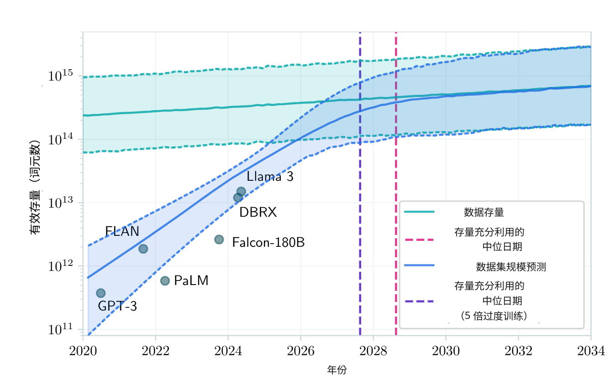
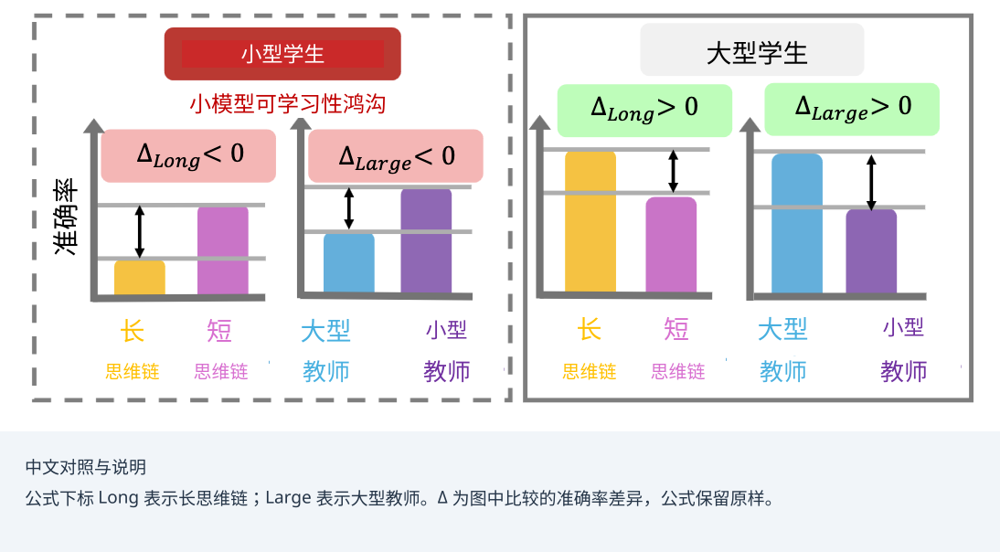
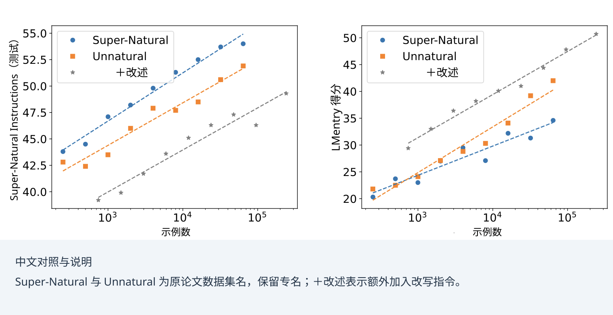
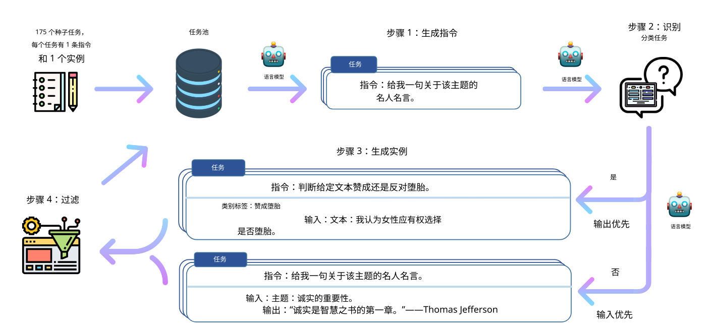

19 / 23 · 中文翻译
第 19 章 *用于训练智能体式大语言模型的合成数据生成
本章目录
19.1 数据的重要性
大语言模型规模的快速增长，带来了对训练和评估数据的巨大需求。有人将训练数据称为“数字石油”，体现了它作为人工智能发展主要原料的重要性。此外，随着模型架构等流水线中的其他组成部分日趋同质化，数据越来越成为形成差异的因素 [Kim et al., 2025a]。模型继续扩展，需要从互联网上抓取数万亿词的人类生成文本；然而，可用的人类生成数据总量有限，这引出了训练数据是否会成为规模扩展主要瓶颈的问题，见图 19.1 [Villalobos et al., 2024]。而且，随着数据需求规模增长，大多数容易利用的来源逐渐枯竭，获取数据的成本和时间也变得愈发难以承受。隐私、版权和偏差问题也促使该领域不再仅关注整理基于网络的人类生成数据，而是转向合成数据生成 [Liang et al., 2022]。

大语言模型越来越多地亲自生成用于训练下一代大语言模型的数据：通过提示，让模型生成指令、对话、推理轨迹，甚至整个训练语料库，再用来微调、蒸馏和评估其他模型 [Long et al., 2024]。与获取并标注人类生成文本相比，这一自我强化循环降低了数据收集的成本和工作量，同时还能够细粒度控制所得数据集的风格、难度和覆盖范围。目前，这一方法已引起产业界 [Kapania et al., 2025] 与学术界 [Viswanathan et al., 2025, Alismail and Lanquillon, 2025] 的广泛兴趣，应用范围从通用指令微调，到训练工具使用、规划和多步推理等智能体行为所需的更专门数据，见第 1.1 页图 1.1。
对模型生成数据日益加深的依赖，也为规模定律（第 4 章）引入了一个新项，用于考虑预训练语料库中合成数据的比例。SYNTHLLM 等近期工作 [Qin et al., 2025] 说明了这为何重要：它从源文档中自动提取高层概念，再通过基于图的算法重新组合，生成多样性足够高的合成语料，使不同规模的模型遵循可预测、经修正的规模定律。在这一版本的规模定律中，收益更早开始递减，早于预训练通常使用的其他词元预算；与较小模型相比，较大模型用相对更少的词元就达到了最优性能。这表明，合成数据不仅可以按数量调节，也可以针对其产生的规模曲线形态进行调节。
除了规模扩展行为之外，为工具使用、规划和多步推理等智能体能力生成数据，越来越依赖协调的多智能体工作流，而不是单一生成模型。专门的智能体可以承担不同角色，例如提出任务、执行任务和评议结果，这往往能够产生质量更高、更加多样，而且在结构上更贴近智能体训练实际需求的数据。Matrix [Wang et al., 2025a] 就是这一方向的一个例子：它是去中心化框架，控制流与数据流都表示为通过分布式队列在智能体之间传递的消息，使流水线能够在没有中央协调器的情况下水平扩展。下面让我们进一步考察合成训练流水线。
19.2 蒸馏循环
在智能体式大语言模型训练流水线中使用合成数据，遵循图 19.2 所示的整体蒸馏循环。生成器，可以是强模型，也可以是多个智能体的编排，利用少量种子数据或真实数据，生成大量原始合成数据。随后，在用于训练或蒸馏模型之前，对这些数据进行整理筛选（第 19.4 节）。关键在于，得到的模型本身也可以成为下一轮迭代的生成器。闭合这一自我强化循环，会给训练稳定性和下游性能带来相当大的风险，也可参见第 8 章关于元学习稳定性的讨论。
蒸馏是合成数据生成的一种特殊情况：生成器是更强的模型，我们试图迁移它的能力。在知识蒸馏中，紧凑的学生模型学习模仿能力更强的教师模型 [Hinton et al., 2015, Hu et al., 2022]。它可以直接针对教师的输出预测进行优化，也可以简单地在教师产生的合成数据上训练。蒸馏的目标是在不牺牲太多任务性能的前提下，获得在推理阶段和数据成本方面都更高效的教师版本。蒸馏已得到广泛应用，也包括智能体场景 [Li et al., 2025a, Du et al., 2025, e.g.,]。蒸馏还可用于生成指令微调所需的偏好数据。例如，Zephyr [Tunstall et al., 2024] 使用人工智能反馈训练：由强教师模型生成输出并排序，以极低的数据和训练成本，让小模型与用户意图对齐。
蒸馏的四个轴
具体的蒸馏方法可以沿四个轴组织。（1）信号：学生模仿的是教师的 logits、完整输出序列，还是由教师产生的标量奖励。（2）数据来源：待评分的序列是教师生成的，还是从学生采样得到的。（3）时机：这些数据是预先一次性生成的，属于离策略；还是随着学生变化而持续生成，属于同策略。（4）教师身份：教师是一个更强的独立模型，还是学生自身。
下面我们讨论蒸馏的这四个轴。
19.2.1 信号：蒸馏目标
当我们能够以白盒方式访问教师（）的概率时，会训练学生 ，使学生的下一个词元分布与教师相匹配。蒸馏中，我们通常使用共同的温度 软化两个分布，因此对于 logits ，有 。对序列语料库的一般蒸馏损失为：
| (19.1) |
其中求和遍历词元位置 ， 是某种散度，最常见的是 KL 散度；温度 使两个分布趋于平坦，让学生也能学习教师的相对置信度。当只能获得教师文本时，即黑盒蒸馏，也是从专有 API 蒸馏时的通常情况，我们无法再观察 ，只能观察从该分布采样的一些词元。此时，软目标 退化为采样词元上的独热向量，散度 变成词元级交叉熵，公式 19.1 便化为在教师生成内容上进行的普通监督微调。第 19.3 节将讨论 Self-Instruct 技术 [Wang et al., 2023b]。这些方法从数据侧执行蒸馏，因此属于黑盒方法。
19.2.2 数据来源：教师—学生范式
在蒸馏中，直觉上的假设是教师越大、越强越好。然而也有例外 [Xu et al., 2025a, Li et al., 2025b]。能力很强的教师，可能生成过长、过复杂，或风格不匹配的轨迹，使小型学生难以吸收。这一现象称为小模型可学习性鸿沟。图 19.3 展示了一种情况：与前沿模型详尽的思维链相比，小型学生反而能从较弱教师更短的推理中学到更多。实践上的含义是，应根据学生当前的能力选择教师，而不是孤立地追求教师能力最大化 [Zhang et al., 2026a]。

19.2.3 时机：离策略与同策略蒸馏
第三个轴涉及时机。蒸馏中最常见的做法是离策略蒸馏：从教师采样固定的补全文本数据集，再在这些数据上微调学生，如上述黑盒情况。这种方法简单且可并行，但存在训练与推理不匹配的问题。学生在训练时仅一次性接触教师生成的词元序列，但在部署时必须延续自身可能有缺陷的序列，而这些序列可能与训练时不同。这种暴露偏差会在漫长的智能体轨迹中累积。
同策略蒸馏通过在循环内部，从学生自身采样序列并让教师评分，来解决这一问题。广义知识蒸馏（GKD）利用教师对学生自生成输出序列的反馈，在这些序列上训练学生 [Agarwal et al., 2024]。学生恰好在它实际访问的状态分布上得到纠正。
这一同策略视角，将经由模仿学习建立的与强化学习的联系明确展现出来。公式 19.1 中逐词元的教师散度，充当稠密的词元级奖励。蒸馏转化为一种强化学习形式，奖励信号由教师提供，而非由稀疏的结果检查器提供 [Lu and Lab, 2025]。混合方案进一步推进这一思路，在强化学习阶段，仅在有帮助的地方有选择地模仿教师 [Zhang et al., 2026b]。
19.2.4 教师身份：自蒸馏与自我改进
教师模型与学生模型并不一定要不同。当二者相同时，蒸馏就变成了自我改进：模型生成候选解，保留通过检查的解，再用这些解训练。STaR [Zelikman et al., 2022a] 以这种方式自举提升推理：迭代生成推理依据，保留得出正确答案的那些，再在其上微调。
另一种方法是自博弈微调（Self-Play Finetuning，SPIN）[Chen et al., 2024]。这种方法让模型在多轮迭代中区分自己的生成内容与参考数据，无需任何外部教师便可改善对齐。或许令人惊讶的是，即便没有新的数据来源，反复进行自蒸馏也能在一定范围内带来可测量的提升 [Pareek et al., 2024]。
当候选输出能够以低成本验证时，自我改进最为有力。在这种情况下，仍可有效引入外部信号。代码和数学问题就是如此，因为解答很容易执行和检查。例如，CURE 是一种强化学习框架，其奖励根据交互结果，让模型的编码能力与单元测试生成能力协同演化。这里没有作为监督的真实正确代码。由于代码容易执行和检查，编程者和测试编写者作为相互适应的智能体，可以对困难问题开展长时域优化。自我挑战和自我演化智能体也基于同一原理：它们自行提出越来越困难的任务，并随时间更新生成策略 [Zhou et al., 2025, Huang et al., 2025, Wang et al., 2025b]。
19.3 模拟人类生成的内容
从整理过的人类生成指令数据，演变为合成生成发挥更核心作用的数据集，或许最能体现对自然产生的人类文本的转离，无论这些文本是直接获取的，还是从网络抓取的。下面我们讨论这些方法，其数据集的核心仍然建立在人类生成数据之上。
Natural Instructions [Mishra et al., 2022] 是一个仍主要以人类贡献支撑数据的资源例子，包含 61 项不同任务、人类编写的任务指令，以及 193k 个任务实例，即输入—输出对。这些指令收集自现有自然语言处理数据集的指令文档，并全部映射至统一模式。大语言模型实验表明，模型在同时观察指令与示例时能够受益，尽管它们仍远远落后于估计的性能上界。
后续工作重点增加不同任务和任务类型的数量 [Wang et al., 2022]、改变指令长度 [Bach et al., 2022]，或者纳入特别困难的任务 [Srivastava et al., 2023]。需要注意，这些元数据集，即数据集的数据集，最终仍然来自人类基准：其中每个样本都是由人撰写的。因此，能从网上自由找到的这类数据量存在实际限制。
由于这些方法依赖众包数据集形式的大量人类监督，近期工作转向生成承担相同作用的合成数据。由此产生了 Unnatural Instructions [Honovich et al., 2023] 等数据集：它们只需很少的人工劳动，主要通过向各种大语言模型发送提示，便能收集富有创意且多样化的指令。实验表明，在带有一定噪声的 Unnatural Instructions 数据集上训练模型，所得结果与在高质量人工整理数据上训练的模型相当，如图 19.4 所示。这一结果说明，在扩充训练数据集并提高其多样性方面，机器生成数据可作为人工劳动的一种低成本替代方案。

生成模型对类人文本、代码和推理的模拟，为机器学习系统的训练与评估开辟了新方法。通过提示强模型，研究者能够生成模仿人类内容创作、且高度多样而复杂的数据集。例如，PersonaHub [Ge et al., 2025] 利用大规模人设集合引导生成过程，通过这些人设提示大语言模型，产生远比无条件生成更为多样的合成数据。
与自我改进类似，在模型输出相对容易验证的领域，使用合成数据训练已展现出很大潜力，例如数学 [Yang et al., 2023, Liu et al., 2023]、编程 [Haluptzok et al., 2023] 和游戏 [Wang et al., 2023a]。
19.3.1 生成训练数据
下面聚焦训练数据的生成。将合成数据用于训练，已从一种小众数据增强技术，转变为现代模型对齐与推理流水线的核心组成部分。Self-Instruct 等技术 [Wang et al., 2023b] 表明，较小的开放权重模型，可以完全使用更强的专有模型生成的数据进行指令微调。如图 19.5 所示，该过程以少量人工编写的指令作为大语言模型的种子，提示其迭代生成新的任务描述、输入和输出。模拟的人类内容，使模型无需大批人工标注者，就能获得复杂的零样本能力。

利用现有数据
另一些方法将整理过的人工数据与合成数据结合，而不是用后者取代前者。Gunasekar et al. [2023] 表明，在人工编写的教科书和合成生成文本的混合数据上训练，可以得到能力很强的语言模型，说明整理过的人工数据与机器生成数据相互补充，而非彼此替代。一项挑战在于，即便以人类生成数据为种子，合成数据也往往缺乏多样性，并继承错误与幻觉。后续改进采用基于真实依据文档的生成过程 [Lupidi et al., 2025, Yue et al., 2024]。
扩充有限种子集的一种互补方法是回译。该方法最初在机器翻译中提出，通过将句子从源语言翻译到目标语言，再翻回源语言，合成平行数据 [Edunov et al., 2018]。同一原理也可改用于推理任务：不再只是为某一个问题生成具体解，而是生成与已有解一致的新问题。MathGenie [Lu et al., 2024] 将这一思路用于数学推理，以问题—解答对组成种子集。它增强解答，再将其回译成新问题。由于每个新生成的问题都以经过验证的解答为依据，这种方法在减少错误和幻觉的同时，也扩大了训练数据的规模和多样性。
有人参与的方法
全自动生成流水线并不总是足够。模型在生成特定情景或领域相关案例时，可能力不从心。失败通常是因为负责生成的大语言模型具有特定盲点，这也使其难以生成真正有信息价值的数据 [Lippmann et al., 2024]。
这些问题推动了有人参与的方法：人类对机器生成内容进行引导、过滤或修改，而非从头编写。
WANLI [Liu et al., 2022] 将提出具有挑战性的自然语言推断示例的语言模型，与负责过滤和重新标注示例的人工标注者配对，将自动生成的可扩展性与人工质量控制相结合。
EvalAssist [Santillán Cooper et al., 2025] 将类似原理应用于评估工具，使用合成数据支持并加速人类判断。一种相关策略是，提示语言模型生成初始种子文本，再由人工评分者编辑，最后用编辑结果自举形成更大的全合成数据集。如此一来，人力投入在于纠正模型，而不是编写每一个示例。
19.3.2 生成评估数据
除训练以外，合成生成在评估中也发挥关键作用。传统静态基准面临快速的数据污染：测试集无意间泄漏进现代大语言模型的预训练语料。为缓解这一问题，动态评估框架 [Kiela et al., 2021] 越来越依赖合成数据生成，来创建专门定制、一次性使用的测试案例。
此外，大语言模型充当裁判的范式 [Zheng et al., 2024]，通过提示强模型为其他模型的输出评分，模拟人工评估；其评估结果与人类偏好高度相关，并显著缩短评估周期的延迟。
还可以再次使用有人参与的方法，为大语言模型创建专门的高难度基准，例如 MATH2。该基准利用多个大语言模型，通过多轮提示，迭代生成并调整数学问题和解答。随后，人工标注者进一步扩展问题并检查答案，这一过程同样由大语言模型辅助 [Shah et al., 2024]。其他高效生成合成评估数据的方法，则将标注者的任务从构想新样本，转变为编辑已有样本，让它们对大语言模型更具难度 [Yuan et al., 2021]。
自动化红队测试
机器生成评估的一种具体用例，是借助自动化红队测试进行面向安全的评估。在这种方法中，一个大语言模型生成对抗性提示，在部署前探测目标模型的弱点 [Ganguli et al., 2022]。通过合成大量可能恶意的提示，研究者能以人工红队难以企及的规模，对模型进行压力测试，并增强其对有害输出、越狱和失对齐的抵抗力 [Perez et al., 2022]。由于同样的生成提示随后还可用于微调目标模型，以消除这些失败，红队测试处于合成评估数据与合成训练数据的交界处。
19.3.3 生成智能体数据
在智能体场景中，必须为完整轨迹合成数据，而不只是单个指令—回复对。随着智能体与环境交互，会产生完整的工具调用、观察和决策序列 [Kang et al., 2025]。这超出了训练或评估仅处理单个输入—输出对的普通大语言模型所需的数据。尽管通常使用相同的生成模型来产生数据，生成智能体数据仍比为底层大语言模型本身生成指令数据更复杂。下面看一个例子。
例 2。
考虑为一个使用工具的智能体合成单条训练轨迹，大体遵循 APIGen-MT 的两阶段方案 [Prabhakar et al., 2025]。
首先，任务提出者构想一个合理的用户目标、一组可用工具，以及一个真实正确答案：
用户：“莱顿这个周末的天气如何，我应该带伞吗？”工具：get_forecast(city, days)。
随后，行动模型展开交互，输出中间工具调用，读取其模拟观察，然后作答：
get_forecast("Leiden", 2) {sat: rain, sun: clear} “周六有雨，周日晴朗——周六请带伞。”
最后，验证器检查输出的调用格式是否正确、参数是否匹配请求，以及最终答案是否与观察一致。仅保留通过验证的轨迹。
注意必须合成哪些内容：不仅是一个输入—输出对，还包括目标、工具模式、调用、观察，以及验证整条轨迹的检查器。
智能体生成方法通常涉及整个智能体编排，用于包含人类输入和工具使用的多轮对话 [Wu et al., 2024]。APIGen-MT [Prabhakar et al., 2025] 的两阶段框架体现了这一转变，能够生成可验证且多样的多轮智能体数据。TOUCAN [Xu et al., 2025b] 则在更大规模上追求类似目标，通过模拟真实的工具调用，构建大型工具智能体数据集。除了为固定技能生成轨迹之外，一些工作还明确合成数据，以将新技能或行为从强模型迁移到弱模型，这一过程称为生成式教学 [Crispino et al., 2024]。此外，智能体合成数据并不限于文本，类似的生成流水线也可以扩展到图像、表格数据，以及其他形式的交互或行为数据。
对智能体合成数据生成而言，控制任务复杂度始终是一项挑战。例如，深度研究智能体旨在通过与在线工具的长时域交互，解决复杂的问答任务，但通常用于训练它们的数据缺少对难度和质量的细粒度控制，使所得合成数据不足以捕捉所需的复杂性。Pandit et al. [2025] 使用一条流水线解决这一问题，合成逐步增加任务复杂度的问答对，直至前沿基线网络智能体失败。这种课程学习方法直接根据智能体能力校准任务难度，而不是依赖固定启发式。
AReaL-SEA [Gao et al., 2026] 从互补角度处理可靠性问题。其多智能体引擎将基于工具的对话与每个实例各自可执行的检查器一并合成。随后，通过闭环自演化过程，随时间更新提示以提高可靠性。
19.4 数据整理筛选
生成合成数据之后，需要检查质量并进行整理筛选。通常，这意味着过滤、评分并选择样本，仅保留有用的示例。评估合成数据的有用性，可以采用两种互补方式：外在评估，通过测量其对下游任务的影响；内在评估，直接检查生成数据或生成过程的属性。
在实践中，整理筛选被实现为多阶段过滤流水线，将下文讨论的标准转化为具体操作。典型阶段包括语义去重，利用嵌入相似性移除近重复示例以保留多样性；困惑度过滤，使用参考模型丢弃不连贯或分布外文本；基于规则或格式的检查；以及奖励模型或裁判评分，仅保留高保真样本。开创性的《Textbooks Are All You Need》论文 [Gunasekar et al., 2023] 提醒我们，这一整理筛选步骤往往与数据量同样重要：严格的质量过滤，可能胜过单纯追求数量。如果缺少过滤，模型很容易学到教师的生成痕迹和统计异常。
19.4.1 外在评估
外在评估回答一个简单问题：合成数据是否真的有助于下游任务？这一主题也称为效用。在实践中，通过在合成数据上训练或微调模型，并在留出的现实测试集上评估，来测量效用；合成数据可以单独使用，也可以与真实数据混合。外在评估是衡量合成数据是否有用的最直接方式。例如，加入合成数据后，如果预训练模型的性能提高，比如以困惑度衡量的性能，我们便可判断这些数据是有用的。然而，这也是最昂贵的方式：需要先完成一次完整训练，才能得到任何信号。如果改变生成过程或选用另一组数据，就必须重新训练和评估模型。因此，外在评估不适合在生成过程中用于过滤或选择单个示例。
19.4.2 内在评估
内在评估则考察生成内容本身的特征，无需承担下游训练运行的成本。已有研究提出了评估合成文本的多个质量维度 [Ramesh et al., 2025]。除了在输出层面评估，也可以直接对生成过程所用的语言模型进行基准测试 [Kim et al., 2025b]。与检查生成数据相比，这可以提供更早、成本更低的信号。
数据正确性
生成示例只有在内容事实准确、逻辑合理时才有用。由于合成数据常常来自其他大语言模型，它会继承生成模型的失败模式，包括虚构事实、不一致推理，或与内容不符的标签。这些错误随后可能传入使用这些数据训练的模型。通常，通过将生成结果与人工生成标签比较 [Long et al., 2024, Chim et al., 2025]、进行验证，例如使用基于规则的检查器或独立裁判模型 [Chen et al., 2025a, Yang et al., 2025, Setlur et al., 2024]，或者检查同一输入的多个生成结果之间的一致性 [Zelikman et al., 2022b, Seegmiller et al., 2025]，来核查正确性。
数据多样性
创建合成数据的一项关键问题是保持多样性。Logit 抑制和温度采样可以改善数据多样性，但会牺牲数据正确性 [Chung et al., 2023]。多样性也难以衡量：常用词汇启发式，如 ROUGE，或神经启发式，如基于嵌入的相似性，作为替代指标，但每种指标都只捕捉数据潜在变化中的一部分。
MetaSynth 通过元提示生成增强多样性的合成数据来处理这一问题：由一个语言模型编排多个专家大语言模型智能体，协作生成数据 [Riaz et al., 2025]。
数据污染
合成数据面临的一个严重风险是污染 [Deng et al., 2024, Balloccu et al., 2024]。负责生成的大语言模型，在规模庞大、过滤不完善的网络数据集上预训练，可能记住基准，并在收到生成新训练示例的提示时，复现或近似改写这些基准。经过许多步骤后，合成生成的数据会趋近已有基准的数据。这会人为抬高评估分数，例如代码生成基准中的情况 [Matton et al., 2024]。解决此类泄漏，应超越简单的精确匹配过滤，需要对已知基准进行 n-gram 重叠搜索、采用成员推断式探测 [Puerto et al., 2025, Huang et al., 2026]，或者使用动态数据集构建流水线 [Chen et al., 2025b]。
公平性与偏差
大语言模型会继承并放大自身训练数据中的社会偏差。如果反过来使用这些模型生成合成语料，就可能进一步延续刻板关联、偏斜的人口群体代表性，或不同社会群体之间不平等的生成质量 [Gallegos et al., 2024]。这一问题对合成数据尤其值得关注，因为数据是大规模产生的，而且往往直接作为新大语言模型的训练材料。
最后，内在指标只是有用性的替代指标。数据集可能在多样性方面得分很高，或通过正确性检查，却无法改善外在评估，甚至有损表现。词汇和神经多样性启发式衡量的是表层变化，可能无法识别真正重要的冗余，例如重复的推理模式，也可能高估多样性。正确性检查还依赖可信参考、基于规则的验证器，或裁判模型的可用性；对于开放式或主观生成任务，这些工具可能不存在，或者不可靠。因此，最好将内在评估视为额外检查，而不是外在评估的真正替代。
19.5 风险
到这里应当已经清楚，使用合成数据训练智能体式大语言模型，并不是没有问题的解决方案。我们将继续讨论合成数据相关的若干风险，包括模型坍塌、偏差放大、安全与隐私弱点，以及法律和伦理问题。
19.5.1 模型坍塌
图 19.2 中循环的特征性风险是，它以自身输出为食。模型坍塌是一种已有充分记录的现象：使用递归生成的人工智能数据训练一代又一代模型，会导致原始分布的多样性消失 [Shumailov et al., 2024]。罕见事件和低概率的语言细微差别较少被采样，因此每一代都会进一步遗忘分布的长尾行为，直至模型收敛为重复性强、偏向高概率内容的模型。一些实验表明，在纯合成数据上反复训练，收益会递减，最终变成负收益 [Singh et al., 2024]；将语料集中于少数合成来源，而不是众多来源，会使所得模型更加脆弱 [Schaffelder and Gatt, 2025]。类似地，从教师蒸馏的小型学生容易产生幻觉，并且常在长尾知识上失败 [Kandpal et al., 2023]。更微妙的是，模仿教师可能产生一种学生：风格与教师一致，事实准确性却落后，这一差距通常只有针对性的能力基准才能揭示 [Gudibande et al., 2023]。标准缓解方式是持续用真实人工数据锚定语料，而不是只在合成数据上训练。
19.5.2 偏差放大
由于生成模型对训练分布中的主流模式呈现过多，合成数据往往会截断自然人类话语中的多样化长尾视角 [van der Meer et al., 2024]。因此，在这类数据上训练的学生，可能表现出教师社会偏差被放大、甚至夸张化的版本。学生模型会复现刻板关联、偏斜的人口群体代表性，或群体间不平等的生成质量 [Gallegos et al., 2024]。与原始模型输出相比，合成数据的这一问题更严重，因为数据被大规模生产，并直接用作训练材料，循环的每一轮都会累积上一轮的影响。
19.5.3 安全风险
合成训练数据还伴随安全风险。依赖生成数据，为恶意污染训练数据引入了新的攻击途径。如果教师模型或生成流水线中的任何阶段遭到攻破，攻击者便能发动数据投毒攻击。由于合成语料通常过于庞大，无法穷尽审计，细微的后门或恶意指令—回复对可能被插入其中，保持休眠，直到部署的学生模型中触发。研究已表明，即便对网络规模语料的极小部分投毒，也是实际可行且成本低廉的 [Carlini et al., 2024]；当“教师”是不受控制的第三方模型，且其训练数据和对齐情况不透明时，风险更高。
19.5.4 隐私保护
合成生成经常被提及为数据隐私的解决方案。其思路是，合成数据不包含个人身份信息（PII）[Dwork and Roth, 2014]，却能够反映医疗记录等私密数据的统计属性。
然而，这类数据存在显著的记忆风险。如果在生成阶段没有严格的隐私保证，生成模型可能无意间重构其最初训练所用的敏感人工数据的确切片段，从而造成泄漏 [Carlini et al., 2021]。隐私评估表明，现成的隐私保护方法可能失败 [Ramesh et al., 2024]。
常见隐私方法依赖差分隐私 [Dwork et al., 2006]：对生成过程作出保证，限定向数据集中添加或删除某一个人的记录时，输出分布能够改变的程度。这一界限由隐私预算控制；预算越小，保护越强，但效用损失也越大 [Yue et al., 2023]。
19.5.5 版权与使用条款
合成数据的部分吸引力，在于绕开抓取互联网规模人类文本的不明确法律地位，这已引发版权诉讼。美国 2025 年的 Bartz v. Anthropic 和解就是一个例子。地区法院认为，大语言模型训练本身具有高度转换性，因此可能适用合理使用；然而，底层语料的取得方式，即摄入数十万本盗版书，仍然导致法律责任。Anthropic 以每部作品约 3,000 美元、总计约 15 亿美元的金额和解，其他案件如 Kadrey v. Meta 也有类似情形。这表明，训练所依据的数据正越来越多地接受版权和使用条款审查。
合成数据并不能完全摆脱这一问题。从专有模型蒸馏引出了另一项问题：多数商业大语言模型 API 的服务条款，明确禁止使用其输出训练竞争模型。因此，无论版权如何，黑盒教师生成的数据都可能存在法律问题。2025 年，围绕竞争系统被指使用前沿 API 输出训练的争议，这一矛盾公开浮现。对实践者而言，这意味着检查生成器的许可，与检查它所替代的人工数据许可同样重要。
19.6 结束语
由于人类文本可能成为规模扩展瓶颈（第 4 章），合成数据已经从小众增强方法，变为大语言模型流水线的核心原料（第 3 章）。强模型和多智能体编排，可以模拟指令数据、评估基准，以及近期出现的由工具调用和决策组成的完整智能体轨迹（第 9 章和第 11 章）。
由于原始生成内容存在噪声，整理筛选、外在效用，以及对正确性、多样性和污染的内在检查，与生成本身同样重要。各种设置都可以视为知识蒸馏的形式，并沿信号、数据来源、时机——离策略或同策略——和教师身份这几个轴组织。
重复利用同一模型的合成数据进行自我改进，在实现可验证推理方面具有前景（第 6 章）。然而，在所有这些流水线中，都必须谨慎对待模型所使用的数据：如果没有真实数据锚定和仔细审计，模型坍塌、偏差放大，以及安全、隐私和许可风险，都会随着每次迭代不断累积。
参考文献
- On-policy distillation of language models: learning from self-generated mistakes. In International Conference on Learning Representations, Vol. 2024, pp. 21246–21263. Cited by: §19.2.3.
- A survey of llm-based methods for synthetic data generation and the rise of agentic workflows. In International Conference on Human-Computer Interaction, pp. 119–135. Cited by: §19.1.
- PromptSource: an integrated development environment and repository for natural language prompts. In Proceedings of the 60th Annual Meeting of the Association for Computational Linguistics: System Demonstrations, V. Basile, Z. Kozareva, and S. Stajner (Eds.), Dublin, Ireland, pp. 93–104. External Links: Link, Document Cited by: §19.3.
- Leak, cheat, repeat: data contamination and evaluation malpractices in closed-source LLMs. In Proceedings of the 18th Conference of the European Chapter of the Association for Computational Linguistics (Volume 1: Long Papers), Y. Graham and M. Purver (Eds.), St. Julian’s, Malta, pp. 67–93. External Links: Link, Document Cited by: §19.4.2.
- Poisoning web-scale training datasets is practical. In 2024 IEEE Symposium on Security and Privacy (SP), Vol. , pp. 407–425. External Links: Document Cited by: §19.5.3.
- Extracting training data from large language models. In 30th USENIX Security Symposium (USENIX Security 21), pp. 2633–2650. External Links: ISBN 978-1-939133-24-3, Link Cited by: §19.5.4.
- Mastering the craft of data synthesis for CodeLLMs. In Proceedings of the 2025 Conference of the Nations of the Americas Chapter of the Association for Computational Linguistics: Human Language Technologies (Volume 1: Long Papers), L. Chiruzzo, A. Ritter, and L. Wang (Eds.), Albuquerque, New Mexico, pp. 12484–12500. External Links: Link, Document, ISBN 979-8-89176-189-6 Cited by: §19.4.2.
- Benchmarking large language models under data contamination: a survey from static to dynamic evaluation. In Proceedings of the 2025 Conference on Empirical Methods in Natural Language Processing, C. Christodoulopoulos, T. Chakraborty, C. Rose, and V. Peng (Eds.), Suzhou, China, pp. 10080–10098. External Links: Link, Document, ISBN 979-8-89176-332-6 Cited by: §19.4.2.
- Self-play fine-tuning converts weak language models to strong language models. arXiv preprint arXiv:2401.01335. Cited by: §19.2.4.
- Evaluating synthetic data generation from user generated text. Computational Linguistics 51 (1), pp. 191–233. External Links: Link, Document Cited by: §19.4.2.
- Increasing diversity while maintaining accuracy: text data generation with large language models and human interventions. In Proceedings of the 61st Annual Meeting of the Association for Computational Linguistics (Volume 1: Long Papers), A. Rogers, J. Boyd-Graber, and N. Okazaki (Eds.), Toronto, Canada, pp. 575–593. External Links: Link, Document Cited by: §19.4.2.
- Agent instructs large language models to be general zero-shot reasoners. In Proceedings of the 41st International Conference on Machine Learning, R. Salakhutdinov, Z. Kolter, K. Heller, A. Weller, N. Oliver, J. Scarlett, and F. Berkenkamp (Eds.), Proceedings of Machine Learning Research, Vol. 235, pp. 9458–9549. External Links: Link Cited by: §19.3.3.
- Unveiling the spectrum of data contamination in language model: a survey from detection to remediation. In Findings of the Association for Computational Linguistics: ACL 2024, L. Ku, A. Martins, and V. Srikumar (Eds.), Bangkok, Thailand, pp. 16078–16092. External Links: Link, Document Cited by: §19.4.2.
- Agentic-r1: distilled dual-strategy reasoning. In Proceedings of the 2025 Conference on Empirical Methods in Natural Language Processing, C. Christodoulopoulos, T. Chakraborty, C. Rose, and V. Peng (Eds.), Suzhou, China, pp. 12029–12043. External Links: Link, Document, ISBN 979-8-89176-332-6 Cited by: §19.2.
- Calibrating noise to sensitivity in private data analysis. In Theory of cryptography conference, pp. 265–284. Cited by: §19.5.4.
- The algorithmic foundations of differential privacy. Foundations and trends® in theoretical computer science 9 (3-4), pp. 211–487. Cited by: §19.5.4.
- Understanding back-translation at scale. In Proceedings of the 2018 Conference on Empirical Methods in Natural Language Processing, E. Riloff, D. Chiang, J. Hockenmaier, and J. Tsujii (Eds.), Brussels, Belgium, pp. 489–500. External Links: Link, Document Cited by: §19.3.1.
- Bias and fairness in large language models: a survey. Computational linguistics 50 (3), pp. 1097–1179. Cited by: §19.4.2, §19.5.2.
- Red teaming language models to reduce harms: methods, scaling behaviors, and lessons learned. External Links: 2209.07858, Link Cited by: §19.3.2.
- From self-evolving synthetic data to verifiable-reward rl: post-training multi-turn interactive tool-using agents. External Links: 2601.22607, Link Cited by: §19.3.3.
- Scaling synthetic data creation with 1,000,000,000 personas. External Links: 2406.20094, Link Cited by: §19.3.
- The false promise of imitating proprietary llms. External Links: 2305.15717, Link Cited by: §19.5.1.
- Textbooks are all you need. External Links: 2306.11644, Link Cited by: §19.3.1, §19.4.
- Language models can teach themselves to program better. In The Eleventh International Conference on Learning Representations, External Links: Link Cited by: §19.3.
- Distilling the knowledge in a neural network. arXiv preprint arXiv:1503.02531. Cited by: §19.2.
- Unnatural instructions: tuning language models with (almost) no human labor. In Proceedings of the 61st Annual Meeting of the Association for Computational Linguistics (Volume 1: Long Papers), A. Rogers, J. Boyd-Graber, and N. Okazaki (Eds.), Toronto, Canada, pp. 14409–14428. External Links: Link, Document Cited by: 图 19.4, 图 19.4, §19.3.
- Teacher-student architecture for knowledge learning: a survey. External Links: 2210.17332, Link Cited by: §19.2.
- R-zero: self-evolving reasoning llm from zero data. arXiv preprint arXiv:2508.05004. Cited by: §19.2.4.
- Robust membership inference for large language models under adversarial generative corruption. In Proceedings of the 64th Annual Meeting of the Association for Computational Linguistics (Volume 1: Long Papers), M. Liakata, V. P. Moreira, J. Zhang, and D. Jurgens (Eds.), San Diego, California, United States, pp. 39531–39547. External Links: Link, Document, ISBN 979-8-89176-390-6 Cited by: §19.4.2.
- Large language models struggle to learn long-tail knowledge. In Proceedings of the 40th International Conference on Machine Learning, A. Krause, E. Brunskill, K. Cho, B. Engelhardt, S. Sabato, and J. Scarlett (Eds.), Proceedings of Machine Learning Research, Vol. 202, pp. 15696–15707. External Links: Link Cited by: §19.5.1.
- Distilling LLM agent into small models with retrieval and code tools. In The Thirty-ninth Annual Conference on Neural Information Processing Systems, External Links: Link Cited by: §19.3.3.
- Examining the expanding role of synthetic data throughout the ai development pipeline. In Proceedings of the 2025 ACM Conference on Fairness, Accountability, and Transparency, FAccT ’25, New York, NY, USA, pp. 45–60. External Links: ISBN 9798400714825, Link, Document Cited by: §19.1.
- Dynabench: rethinking benchmarking in NLP. In Proceedings of the 2021 Conference of the North American Chapter of the Association for Computational Linguistics: Human Language Technologies, K. Toutanova, A. Rumshisky, L. Zettlemoyer, D. Hakkani-Tur, I. Beltagy, S. Bethard, R. Cotterell, T. Chakraborty, and Y. Zhou (Eds.), Online, pp. 4110–4124. External Links: Link, Document Cited by: §19.3.2.
- Survey and evaluation of converging architecture in llms based on footsteps of operations. IEEE Open Journal of the Computer Society 6 (), pp. 1214–1226. External Links: Document Cited by: §19.1.
- Evaluating language models as synthetic data generators. In Proceedings of the 63rd Annual Meeting of the Association for Computational Linguistics (Volume 1: Long Papers), W. Che, J. Nabende, E. Shutova, and M. T. Pilehvar (Eds.), Vienna, Austria, pp. 6385–6403. External Links: Link, Document, ISBN 979-8-89176-251-0 Cited by: §19.4.2.
- Chain-of-agents: end-to-end agent foundation models via multi-agent distillation and agentic rl. External Links: 2508.13167, Link Cited by: §19.2.
- Small models struggle to learn from strong reasoners. In Findings of the Association for Computational Linguistics: ACL 2025, W. Che, J. Nabende, E. Shutova, and M. T. Pilehvar (Eds.), Vienna, Austria, pp. 25366–25394. External Links: Link, Document, ISBN 979-8-89176-256-5 Cited by: 图 19.3, 图 19.3, §19.2.2.
- Advances, challenges and opportunities in creating data for trustworthy ai. Nature Machine Intelligence 4 (8), pp. 669–677. Cited by: §19.1.
- Illuminating blind spots of language models with targeted agent-in-the-loop synthetic data. External Links: 2403.17860, Link Cited by: §19.3.1.
- WANLI: worker and AI collaboration for natural language inference dataset creation. In Findings of the Association for Computational Linguistics: EMNLP 2022, Y. Goldberg, Z. Kozareva, and Y. Zhang (Eds.), Abu Dhabi, United Arab Emirates, pp. 6826–6847. External Links: Link, Document Cited by: §19.3.1.
- TinyGSM: achieving ¿80% on gsm8k with small language models. External Links: 2312.09241, Link Cited by: §19.3.
- On LLMs-driven synthetic data generation, curation, and evaluation: a survey. In Findings of the Association for Computational Linguistics: ACL 2024, L. Ku, A. Martins, and V. Srikumar (Eds.), Bangkok, Thailand, pp. 11065–11082. External Links: Link, Document Cited by: §19.1, §19.4.2.
- On-policy distillation. Thinking Machines Lab: Connectionism. Note: https://thinkingmachines.ai/blog/on-policy-distillation External Links: Document Cited by: §19.2.3.
- MathGenie: generating synthetic data with question back-translation for enhancing mathematical reasoning of LLMs. In Proceedings of the 62nd Annual Meeting of the Association for Computational Linguistics (Volume 1: Long Papers), L. Ku, A. Martins, and V. Srikumar (Eds.), Bangkok, Thailand, pp. 2732–2747. External Links: Link, Document Cited by: §19.3.1.
- Source2Synth: synthetic data generation and curation grounded in real data sources. In Will Synthetic Data Finally Solve the Data Access Problem?, External Links: Link Cited by: §19.3.1.
- On leakage of code generation evaluation datasets. In Findings of the Association for Computational Linguistics: EMNLP 2024, Y. Al-Onaizan, M. Bansal, and Y. Chen (Eds.), Miami, Florida, USA, pp. 13215–13223. External Links: Link, Document Cited by: §19.4.2.
- Cross-task generalization via natural language crowdsourcing instructions. In Proceedings of the 60th Annual Meeting of the Association for Computational Linguistics (Volume 1: Long Papers), S. Muresan, P. Nakov, and A. Villavicencio (Eds.), Dublin, Ireland, pp. 3470–3487. External Links: Link, Document Cited by: §19.3.
- Synthesizing agentic data for web agents with progressive difficulty enhancement mechanisms. External Links: 2510.13913, Link Cited by: §19.3.3.
- Understanding the gains from repeated self-distillation. External Links: 2407.04600, Link Cited by: §19.2.4.
- Red teaming language models with language models. In Proceedings of the 2022 Conference on Empirical Methods in Natural Language Processing, Y. Goldberg, Z. Kozareva, and Y. Zhang (Eds.), Abu Dhabi, United Arab Emirates, pp. 3419–3448. External Links: Link, Document Cited by: §19.3.2.
- APIGen-mt: agentic pipeline for multi-turn data generation via simulated agent-human interplay. In Advances in Neural Information Processing Systems, D. Belgrave, C. Zhang, H. Lin, R. Pascanu, P. Koniusz, M. Ghassemi, and N. Chen (Eds.), Vol. 38, pp. . External Links: Link Cited by: §19.3.3, Example 2.
- Scaling up membership inference: when and how attacks succeed on large language models. In Findings of the Association for Computational Linguistics: NAACL 2025, L. Chiruzzo, A. Ritter, and L. Wang (Eds.), Albuquerque, New Mexico, pp. 4165–4182. External Links: Link, Document, ISBN 979-8-89176-195-7 Cited by: §19.4.2.
- Scaling laws of synthetic data for language model. In Second Conference on Language Modeling, External Links: Link Cited by: §19.1.
- Evaluating differentially private synthetic data generation in high-stakes domains. In Findings of the Association for Computational Linguistics: EMNLP 2024, Y. Al-Onaizan, M. Bansal, and Y. Chen (Eds.), Miami, Florida, USA, pp. 15254–15269. External Links: Link, Document Cited by: §19.5.4.
- SynthTextEval: synthetic text data generation and evaluation for high-stakes domains. In Proceedings of the 2025 Conference on Empirical Methods in Natural Language Processing: System Demonstrations, I. Habernal, P. Schulam, and J. Tiedemann (Eds.), Suzhou, China, pp. 487–499. External Links: Link, Document, ISBN 979-8-89176-334-0 Cited by: §19.4.2.
- MetaSynth: meta-prompting-driven agentic scaffolds for diverse synthetic data generation. In Findings of the Association for Computational Linguistics: ACL 2025, W. Che, J. Nabende, E. Shutova, and M. T. Pilehvar (Eds.), Vienna, Austria, pp. 18770–18803. External Links: Link, Document, ISBN 979-8-89176-256-5 Cited by: §19.4.2.
- Synthetic data for evaluation: supporting LLM-as-a-judge workflows with EvalAssist. In Proceedings of the 2025 Conference on Empirical Methods in Natural Language Processing: System Demonstrations, I. Habernal, P. Schulam, and J. Tiedemann (Eds.), Suzhou, China, pp. 1–11. External Links: Link, Document, ISBN 979-8-89176-334-0 Cited by: §19.3.1.
- Synthetic eggs in many baskets: the impact of synthetic data diversity on llm fine-tuning. External Links: 2511.01490, Link Cited by: §19.5.1.
- FLAMES: improving LLM math reasoning via a fine-grained analysis of the data synthesis pipeline. In Findings of the Association for Computational Linguistics: EMNLP 2025, C. Christodoulopoulos, T. Chakraborty, C. Rose, and V. Peng (Eds.), Suzhou, China, pp. 24746–24766. External Links: Link, Document, ISBN 979-8-89176-335-7 Cited by: §19.4.2.
- RL on incorrect synthetic data scales the efficiency of llm math reasoning by eight-fold. In Advances in Neural Information Processing Systems, A. Globerson, L. Mackey, D. Belgrave, A. Fan, U. Paquet, J. Tomczak, and C. Zhang (Eds.), Vol. 37, pp. 43000–43031. External Links: Document, Link Cited by: §19.4.2.
- Ai-assisted generation of difficult math questions. arXiv preprint arXiv:2407.21009. Cited by: §19.3.2.
- The curse of recursion: training on generated data makes models forget. External Links: 2305.17493, Link Cited by: §19.5.1.
- Beyond human data: scaling self-training for problem-solving with language models. Transactions on Machine Learning Research. Note: Expert Certification External Links: ISSN 2835-8856, Link Cited by: §19.5.1.
- Beyond the imitation game: quantifying and extrapolating the capabilities of language models. Transactions on machine learning research. Cited by: §19.3.
- Zephyr: direct distillation of LM alignment. In First Conference on Language Modeling, External Links: Link Cited by: §19.2.
- An empirical analysis of diversity in argument summarization. In Proceedings of the 18th Conference of the European Chapter of the Association for Computational Linguistics (Volume 1: Long Papers), Y. Graham and M. Purver (Eds.), St. Julian’s, Malta, pp. 2028–2045. External Links: Link, Document Cited by: §19.5.2.
- Position: will we run out of data? limits of LLM scaling based on human-generated data. In Forty-first International Conference on Machine Learning, External Links: Link Cited by: 图 19.1, 图 19.1, §19.1.
- Synthetic data in the era of large language models. In Proceedings of the 63rd Annual Meeting of the Association for Computational Linguistics (Volume 5: Tutorial Abstracts), Y. Arase, D. Jurgens, and F. Xia (Eds.), Vienna, Austria, pp. 11–12. External Links: Link, Document, ISBN 979-8-89176-255-8 Cited by: §19.1.
- Matrix: peer-to-peer multi-agent synthetic data generation framework. External Links: 2511.21686, Link Cited by: §19.1.
- Voyager: an open-ended embodied agent with large language models. arXiv preprint arXiv:2305.16291. Cited by: §19.3.
- Co-evolving llm coder and unit tester via reinforcement learning. In Advances in Neural Information Processing Systems, D. Belgrave, C. Zhang, H. Lin, R. Pascanu, P. Koniusz, M. Ghassemi, and N. Chen (Eds.), Vol. 38, pp. 143630–143664. External Links: Link Cited by: §19.2.4.
- Self-instruct: aligning language models with self-generated instructions. In Proceedings of the 61st Annual Meeting of the Association for Computational Linguistics (Volume 1: Long Papers), A. Rogers, J. Boyd-Graber, and N. Okazaki (Eds.), Toronto, Canada, pp. 13484–13508. External Links: Link, Document Cited by: 图 19.5, 图 19.5, §19.2.1, §19.3.1.
- Super-NaturalInstructions: generalization via declarative instructions on 1600+ NLP tasks. In Proceedings of the 2022 Conference on Empirical Methods in Natural Language Processing, Y. Goldberg, Z. Kozareva, and Y. Zhang (Eds.), Abu Dhabi, United Arab Emirates, pp. 5085–5109. External Links: Link, Document Cited by: §19.3.
- AutoGen: enabling next-gen LLM applications via multi-agent conversation. In ICLR 2024 Workshop on Large Language Model (LLM) Agents, External Links: Link Cited by: §19.3.3.
- Stronger models are not always stronger teachers for instruction tuning. In Proceedings of the 2025 Conference of the Nations of the Americas Chapter of the Association for Computational Linguistics: Human Language Technologies (Volume 1: Long Papers), L. Chiruzzo, A. Ritter, and L. Wang (Eds.), Albuquerque, New Mexico, pp. 4392–4405. External Links: Link, Document, ISBN 979-8-89176-189-6 Cited by: §19.2.2.
- TOUCAN: synthesizing 1.5m tool-agentic data from real-world mcp environments. External Links: 2510.01179, Link Cited by: §19.3.3.
- LongFaith: enhancing long-context reasoning in LLMs with faithful synthetic data. In Findings of the Association for Computational Linguistics: ACL 2025, W. Che, J. Nabende, E. Shutova, and M. T. Pilehvar (Eds.), Vienna, Austria, pp. 3236–3256. External Links: Link, Document, ISBN 979-8-89176-256-5 Cited by: §19.4.2.
- LeanDojo: theorem proving with retrieval-augmented language models. In Advances in Neural Information Processing Systems, A. Oh, T. Naumann, A. Globerson, K. Saenko, M. Hardt, and S. Levine (Eds.), Vol. 36, pp. 21573–21612. External Links: Link Cited by: §19.3.
- SynthBio: a case study in faster curation of text datasets. In Thirty-fifth Conference on Neural Information Processing Systems Datasets and Benchmarks Track (Round 2), External Links: Link Cited by: §19.3.2.
- Synthetic text generation with differential privacy: a simple and practical recipe. In Proceedings of the 61st Annual Meeting of the Association for Computational Linguistics (Volume 1: Long Papers), A. Rogers, J. Boyd-Graber, and N. Okazaki (Eds.), Toronto, Canada, pp. 1321–1342. External Links: Link, Document Cited by: §19.5.4.
- MAmmoTH2: scaling instructions from the web. In Advances in Neural Information Processing Systems, A. Globerson, L. Mackey, D. Belgrave, A. Fan, U. Paquet, J. Tomczak, and C. Zhang (Eds.), Vol. 37, pp. 90629–90660. External Links: Document, Link Cited by: §19.3.1.
- Star: self-taught reasoner bootstrapping reasoning with reasoning. Advances in Neural Information Processing Systems (NeurIPS). Cited by: §19.2.4.
- STaR: bootstrapping reasoning with reasoning. In Advances in Neural Information Processing Systems, S. Koyejo, S. Mohamed, A. Agarwal, D. Belgrave, K. Cho, and A. Oh (Eds.), Vol. 35, pp. 15476–15488. External Links: Link Cited by: §19.4.2.
- Find your optimal teacher: personalized data synthesis via router-guided multi-teacher distillation. In Proceedings of the 64th Annual Meeting of the Association for Computational Linguistics (Volume 1: Long Papers), M. Liakata, V. P. Moreira, J. Zhang, and D. Jurgens (Eds.), San Diego, California, United States, pp. 14619–14637. External Links: Link, Document, ISBN 979-8-89176-390-6 Cited by: §19.2.2.
- Reinforcement-aware knowledge distillation for LLM reasoning. In Forty-third International Conference on Machine Learning, External Links: Link Cited by: §19.2.3.
- Judging llm-as-a-judge with mt-bench and chatbot arena. Advances in Neural Information Processing Systems 36. Cited by: §19.3.2.
- Self-challenging language model agents. In Advances in Neural Information Processing Systems, D. Belgrave, C. Zhang, H. Lin, R. Pascanu, P. Koniusz, M. Ghassemi, and N. Chen (Eds.), Vol. 38, pp. 113959–113991. External Links: Link Cited by: §19.2.4.